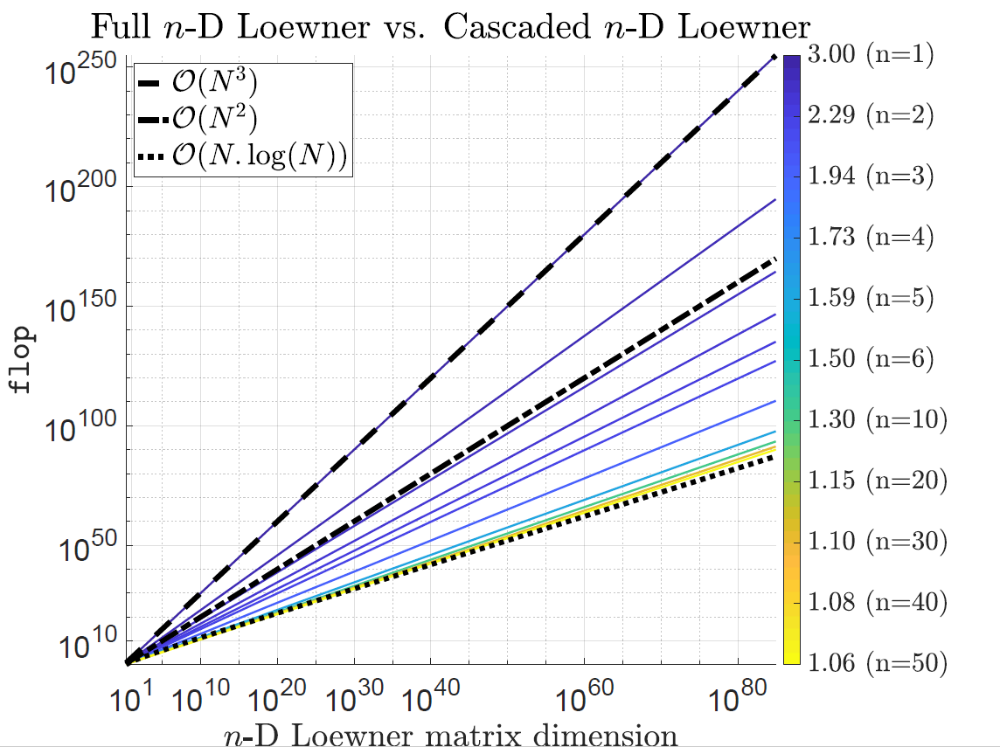

The multivariate Loewner framework :
Taming the curse of dimensionality and the Kolmogorov superposition theorem (May 2024)
- We propose a generalized realization form for rational functions in $n$-variables (in the Lagrange basis);
- We show that the $n$-dimensional Loewner matrix is the solution of a series of cascaded Sylvester equations;
- We demonstrate that the barycentric coefficients can be computed using a sequence of small-scale 1-dimensional Loewner matrices instead of the large-scale ($N \times N$) $n$-dimensional one, therefore drastically reducing the both computational effort and memory needs, and improving accuracy;
- We show that this decomposition achieves variables decoupling; thus connecting the Loewner framework for rational interpolation of multivariate functions and the Kolmogorov Superposition Theorem (KST), restricted to rational functions. The result is the formulation of KST for the special case of rational functions;
- Connections with KAN neural nets follows (detailed in future work).
$$
\begin{array}{ccl}
\mathbb C^{k_1} \times\mathbb C^{q_1} \times \ldots \times \mathbb C^{k_n}\times \mathbb C^{q_n} \times \mathbb C^{(k_1+q_1)\times \cdots \times (k_n+q_n)} & \longrightarrow & \mathbb C^{Q\times K} \\
\left(\lambda^{(1)},\mu^{(1)},\ldots,\lambda^{(n)},\mu^{(n)},\texttt{tab}_n\right) & \longmapsto & \mathbb L_n
\end{array}
$$
where each entry of the $\mathbb L_n$ matrix reads
$$
\ell_{j_1,j_2,\cdots,j_{n}}^{i_1,i_2,\cdots,i_{n}} = \dfrac{v_{i_1,i_2,\cdots,i_n}-w_{j_1,j_2,\cdots,j_n}}{(\mu^{(1)}_{i_1}-\lambda^{(1)}_{j_1})\cdots (\mu^{(n)}_{i_n}-\lambda^{(n)}_{j_n})}.
$$
Figure compares flop: cascaded $n$-D Loewner worst-case upper bounds for varying number of variables $n$, while the full $n$-D Loewner ($\mathbb L_n\in \mathbb C^{N \times N}$) is $\mathcal{O}(N^3)$ (black dashed); comparison with $\mathcal{O}(N^3)$ and $\mathcal{O}(N \log(N))$ references are shown in dash-dotted and dotted black lines.
A. C. Antoulas, I. V. Gosea and C. Poussot-Vassal, "On the Loewner framework, the Kolmogorov superposition theorem, and the curse of dimensionality", in SIAM Review (Research Spotlight)
>> arXiv
>> GitHub code
>> YouTube video
